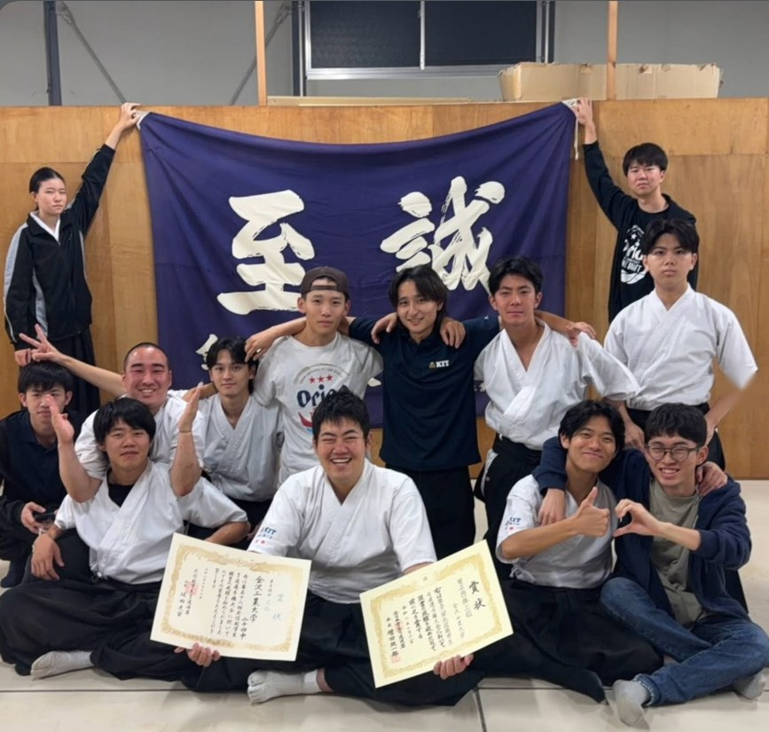
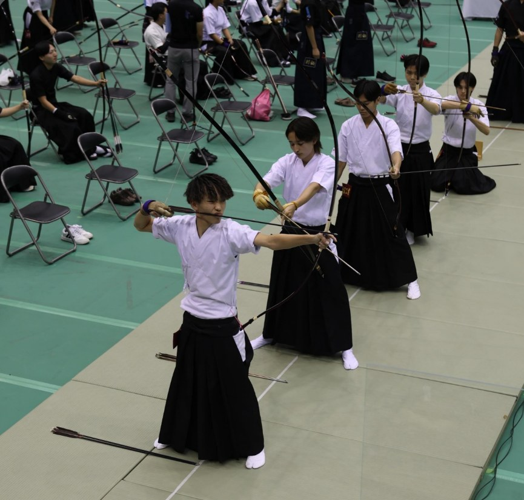
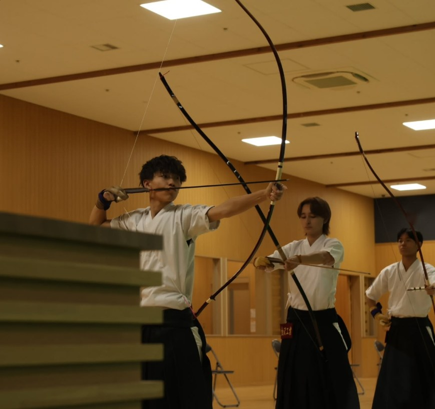
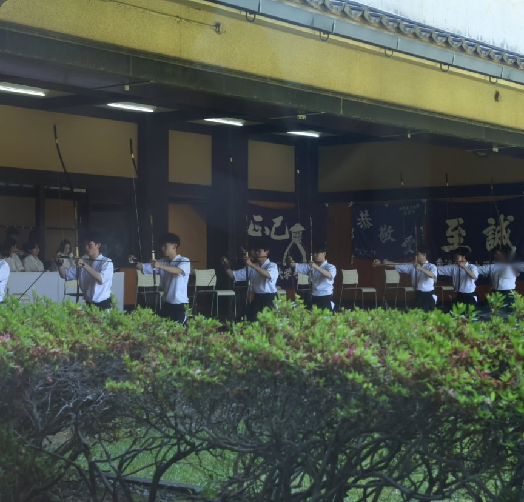

10/10
2026秋季北信越大会
カテゴリー：令和8年度

10月10日〜12日の3日間、秋季北信越大会がありました。
結果は、男子団体3位🥉、女子団体は予選敗退と、悔しい結果になりました。
気持ちを改め、今後の大会に向けて部員一同頑張ります。応援よろしくお願いします！
第52代金沢工業大学弓道部
大会結果
- 【男子団体】3位
- 【女子団体】予選敗退

10/10
2026カテゴリー：令和8年度

10月10日〜12日の3日間、秋季北信越大会がありました。
結果は、男子団体3位🥉、女子団体は予選敗退と、悔しい結果になりました。
気持ちを改め、今後の大会に向けて部員一同頑張ります。応援よろしくお願いします！
第52代金沢工業大学弓道部
8/18
2026カテゴリー：令和8年度

8月18日、19日に開催された第74回全日本学生弓道選手権大会に出場しました。大会結果を報告します。
今回の大会で得た経験を今後の稽古に活かし、さらなる成長につなげていきます。
第52代金沢工業大学弓道部
8/11
2026カテゴリー：令和8年度

新潟県の謙信公武道館で、北信越の5大学との練習試合を行いました。
インカレの1週間前、男子・女子ともに現在の自分自身の課題を再確認するとともに、自分の強みを意識することのできる、とても良い時間となりました！
あと1週間後のインカレ、男女ともに予選を突破し、高みに挑戦していきます！応援よろしくお願いします！
第52代金沢工業大学弓道部
6/13
2026カテゴリー：令和8年度

6月13日に春季五大学定期対抗戦が行われました。
結果は、男子A団体2位、男子個人2位、3位という結果でした。
選抜前最後の大会に良い結果を取ることは出来ませんでしたが、得られるものが多い試合でした。
第52代金沢工業大学弓道部